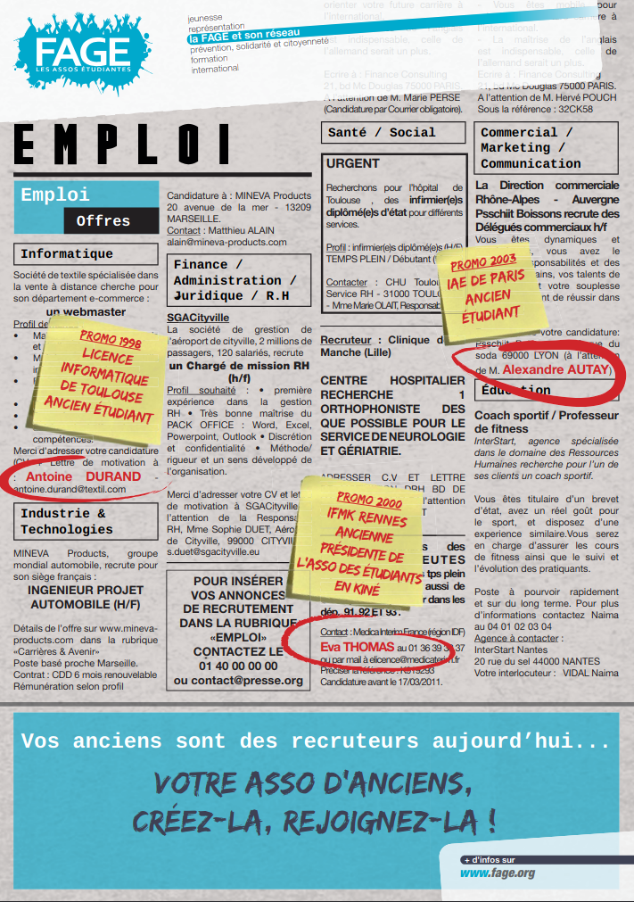

Votre asso d'anciens : créez-la, rejoignez-la !

Au-delà de la simple perspective de création d'un réseau d'entraide, cela permet de défendre des
valeurs communes, de défendre, promouvoir, et de s'identifier autour de l'établissement, du
diplôme.
Tout en mettant en relation les anciens et actuels étudiants/élèves, cela assure la promotion et
l'image des diplômes, et cursus préparés, aux yeux des professionnels.
Il paraissait essentiel de mettre en place un kit de mobilisation , permettant de donner les clefs de base pour la création et le fonctionnement de ces associations.
L'axe de travail de cette campagne est de faire prendre conscience et de sensibiliser les associatifs étudiants, mais surtout plus largement les étudiants à l'utilité de ce type de structure, et de leur donner les bases et les moyens de créer et développer une association d'anciens étudiants / élèves.
Il paraissait essentiel de mettre en place un kit de mobilisation , permettant de donner les clefs de base pour la création et le fonctionnement de ces associations.
L'axe de travail de cette campagne est de faire prendre conscience et de sensibiliser les associatifs étudiants, mais surtout plus largement les étudiants à l'utilité de ce type de structure, et de leur donner les bases et les moyens de créer et développer une association d'anciens étudiants / élèves.
Ce que comprend le kit de la campagne
- Un kit de mobilisation en téléchargement relatant les moyens et les éléments de base à utiliser et mettre en place pour la création et le développement d'association d'anciens étudiants / élèves dans votre établissement.
- Une affiche (à imprimer) permettant de communiquer et de faire la promotion des associations d'anciens étudiants.